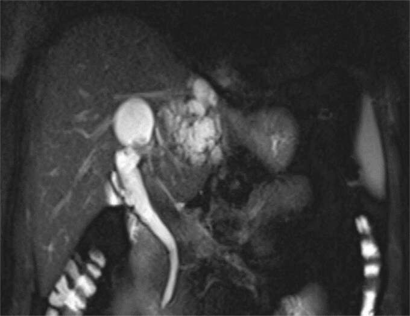
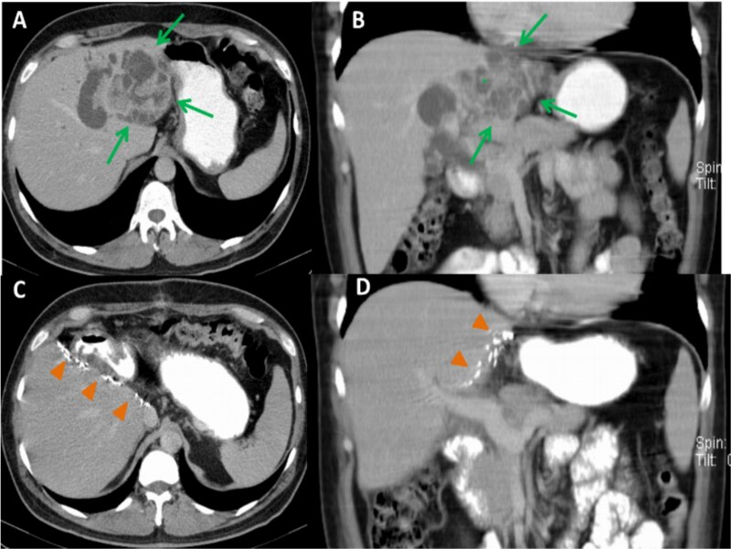
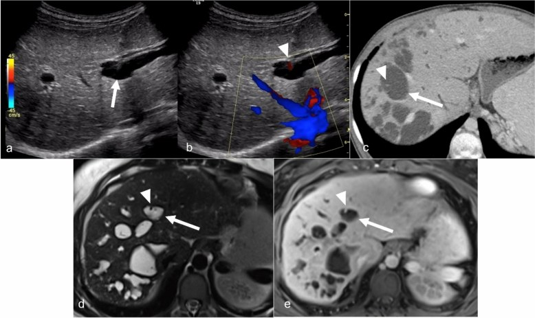
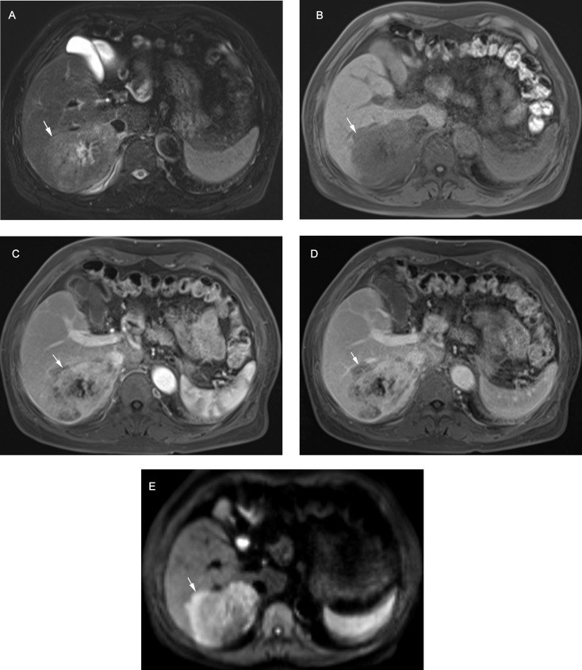
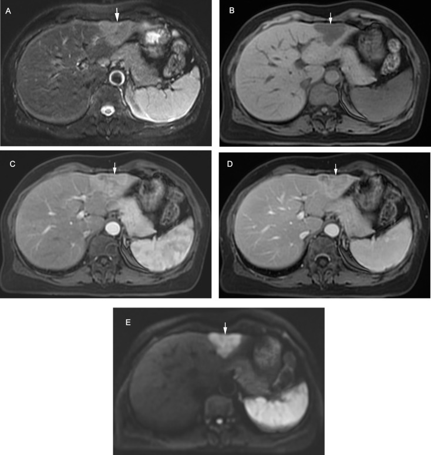

173 — Ung thư đường mật trong gan trên nền Caroli/CHF: tầm soát, LR-M, CA 19-9, sinh thiết & ghép gan / Intrahepatic cholangiocarcinoma in Caroli disease & congenital hepatic fibrosis
Tags: pattern:khoi-gan pattern:hep-duong-mat pattern:hoai-tu vung:gan score:LI-RADS-LR-M protocol:MRI-Gd-EOB-DTPA protocol:MRCP
Mức chắc chắn (certainty): tổng hợp y văn (literature synthesis) — gom đoàn hệ 19 ca Caroli/Caroli syndrome (Hanafy AS et al., Sci Rep 2026, PMC13031803), 214 ca iCCA/HCC đối chiếu LI-RADS (Sheng R et al., Cancer Imaging 2025, PMC11938583), tổng quan hình ảnh HCC–cHCC-CCA–iCCA (Shin J et al., J Liver Cancer 2026, PMC13062603), phân tích gộp 60 nghiên cứu CA 19-9 (Wang Z et al., Discov Oncol 2024, PMC11655830), 20 ca ghép gan do Caroli syndrome (Hou F et al., Orphanet J Rare Dis 2025, PMC12492817), tổng quan ghép gan cho iCCA (Lee HW, J Liver Cancer 2026, PMC13062628) và ca iCCA trên Caroli (Abouelwafa O et al., J Surg Case Rep 2025, PMC12380465).
1. Tổng quan bệnh học – cơ chế hình ảnh: ứ mật mạn → viêm → loạn sản → ung thư
- Bối cảnh: bệnh Caroli (Caroli disease — CD) là giãn dạng túi, từng đoạn, không do tắc nghẽn của đường mật trong gan, thông với cây đường mật; hội chứng Caroli (Caroli syndrome — CS) = CD + xơ hóa gan bẩm sinh (congenital hepatic fibrosis — CHF) và thường kèm nang thận. Cả hai thuộc phổ bệnh gan–mật dạng nang–xơ (fibropolycystic liver disease), liên quan đột biến PKHD1 (fibrocystin/polyductin).
- Cơ chế sinh ung: ứ mật trong các túi giãn → viêm đường mật tái diễn + sỏi trong gan → tổn thương lặp lại biểu mô đường mật → loạn sản → ung thư đường mật trong gan (intrahepatic cholangiocarcinoma — iCCA). Đột biến KRAS/TP53 được báo cáo trong iCCA trên nền bệnh nang–xơ.
- Nguy cơ định lượng (đây là lý do phải tầm soát):
- 7–16% bệnh nhân Caroli tiến triển thành iCCA (Abouelwafa 2025, PMC12380465); các loạt khác báo 2,7–37,5%, và tỷ lệ tới 14% thường được trích.
- Trong đoàn hệ 19 ca: 3/12 ca CS (25%) có iCCA, 0/7 ca CD đơn thuần; cả 3 ca iCCA đều tử vong sau 3,3 ± 2,3 tháng kể từ lúc chẩn đoán (PMC13031803).
- Nguy cơ ở Caroli được báo cáo tăng tới ~100 lần so với dân số chung (dẫn trong bài 166).
- TẠI SAO hình ảnh iCCA trên nền Caroli khó: nhu mô gan bị túi dịch, sỏi, xơ, viêm làm biến dạng giải phẫu; khối u có thể nằm trong lòng túi giãn hoặc dạng thâm nhiễm dọc ống mật, không có "khối tròn" điển hình. Vì vậy mọi thay đổi mô đặc/ngấm thuốc trong túi dịch, hoặc hẹp mới gây giãn đường mật thượng nguồn, phải coi là nghi ung thư cho tới khi loại trừ.
- Vật lý hình ảnh – vì sao iCCA "bắt thuốc chậm":
- iCCA có mô đệm xơ (fibrous stroma) dày → chất cản quang khuếch tán chậm vào khoảng kẽ → ngấm thuốc viền ở thì động mạch, ngấm trung tâm tiến triển ở thì tĩnh mạch cửa/muộn (delayed central enhancement).
- Phần hoại tử/niêm dịch (mucin) → T2 rất sáng, T1 tối, không ngấm thuốc; mô u sống ở viền ngấm thuốc.
- Hạn chế khuếch tán ở phần đặc (ADC thấp) do tế bào u dày đặc; mô xơ/hoại tử có thể không hạn chế.
- Trên MRI với gadoxetic acid (Gd-EOB-DTPA): iCCA giảm tín hiệu ở thì gan mật (hepatobiliary phase — HBP) vì không có hepatocyte, thường có dạng bia (targetoid).
- Ngưỡng định lượng trụ cột khác:
- CA 19-9: trung vị 40,5 U/mL ở CS so với 15 U/mL ở CD (p = 0,009); ≥ 103 U/L được đề xuất là mốc nghi ác tính/tiên lượng xấu (PMC13031803 dẫn y văn).
- CA 19-9 tiên lượng: CA 19-9 cao trước mổ làm tăng nguy cơ tử vong HR 1,90 (95% CI 1,74–2,07) ở ung thư đường mật nói chung; riêng iCCA HR 2,00 (1,79–2,23) (60 nghiên cứu, 15.031 bệnh nhân — PMC11655830).
- LR-M trên MRI: phân loại đúng 89/107 iCCA (83,2%), độ nhạy 83,2%, độ đặc hiệu 85,1%, độ chính xác 84,1%; 26,2% iCCA có ít nhất một đặc điểm chính của HCC và 15,0% bị xếp nhầm LR-4/5, chỉ 1 ca vào LR-5 (PMC11938583).
2. Mẫu hình + chẩn đoán phân biệt theo hình thái & nền bệnh (Gamut)
- Theo hình thái iCCA:
- Thể khối (mass-forming): khối đặc, bờ không đều, co kéo vỏ gan (capsular retraction), ngấm viền thì động mạch + trung tâm muộn; hay gặp ở nhu mô không xơ.
- Thể quanh ống mật/thâm nhiễm (periductal/infiltrative): dày thành ống mật, hẹp gây giãn đường mật thượng nguồn, khó thấy khối — dạng hay gặp và dễ bỏ sót nhất trên nền Caroli.
- Thể trong lòng ống (intraductal): khối trong lòng đường mật giãn, phân biệt với sỏi/sản phẩm máu; có thể là tiền thân IPNB.
- Theo nền bệnh:
- Caroli/CS: khối trong túi giãn, dày vách, nốt ngấm thuốc; kèm sỏi.
- CHF: gan xơ, tăng áp lực cửa; iCCA có thể ẩn trong nhu mô xơ.
- PSC/viêm đường mật mạn/sỏi trong gan: hẹp–giãn xen kẽ, khối dọc ống mật.
- Nang gan đơn thuần/đa nang (PLD): nang không thông với đường mật, vách mỏng, không ngấm thuốc — khác Caroli.
- Gamut "nang/túi dịch có thành phần đặc hoặc vách dày": iCCA trong Caroli · u nhầy đường mật (mucinous cystic neoplasm — MCN) · u nhú đường mật trong ống (IPNB) · áp-xe gan/đường mật · nang bội nhiễm/xuất huyết · di căn dạng nang · HCC hoại tử.
- Mnemonic "CAROLI-CA": Cholestasis mạn (ứ mật) — Atrophy (teo thùy) — Retraction (co kéo vỏ) — Obstruction (hẹp/tắc mới) — Lewis antigen (CA 19-9 âm giả) — Intraductal mass — CArcoli background.
3. Bảng so sánh phân biệt (ma trận đối chiếu)
| Thực thể (entity) | Hình ảnh điển hình | Chốt vào (rule-in) | Chốt loại (rule-out) | Gợi ý xác nhận |
|---|---|---|---|---|
| iCCA thể ống lớn (large-duct) | MRI: viền ngấm thuốc thì động mạch (rim APHE), thải thuốc ngoại vi, ngấm trung tâm muộn; DWI/HBP dạng bia; CT: khối + co kéo vỏ + giãn đường mật | Dạng bia (targetoid) + ngấm trung tâm muộn + giãn đường mật thượng nguồn | Ngấm đồng nhất thì động mạch + thải thuốc không viền → nghĩ HCC | MRI EOB đa thì + DWI + MRCP; sinh thiết nếu cần |
| iCCA thể ống nhỏ (small-duct) | MRI: ngấm thuốc không viền thì động mạch, thải thuốc không ngoại vi — giống HCC; T2 trung bình, HBP giảm | Khối nhỏ trong gan xơ + HBP giảm + không có vỏ/xơ bao | HBP đồng tín hiệu + vỏ bao + thải thuốc điển hình → HCC | Sinh thiết/mô bệnh; theo dõi sát |
| HCC | Ngấm toàn bộ/không viền thì động mạch, thải thuốc, vỏ bao, HBP giảm nhẹ; thường trong gan xơ | APHE không viền + washout không ngoại vi + vỏ bao | Rim APHE + ngấm trung tâm muộn → LR-M/iCCA | LI-RADS; AFP không đủ |
| cHCC-CCA | Phổ trung gian: phần HCC + phần CCA; có thể dạng bia không điển hình | Hai thành phần mô học trên mô bệnh | Không thể loại trừ bằng hình ảnh đơn thuần | Sinh thiết đủ mảnh/mô bệnh sau mổ |
| IPNB | Khối trong lòng ống mật giãn, "dấu hiệu ngón tay", tăng dần thì muộn; có thể lan dọc ống | Khối trong lòng ống + ống mật giãn như túi | Không thấy khối trong lòng, chỉ sỏi → sỏi đường mật | MRCP + cholangioscopy |
| MCN (u nhầy) | Nang một ổ/vài ổ, vách dày, vôi hóa vách, không thông với đường mật; thường ở nữ | Nang không thông + vách dày + vôi hóa | Thông với cây đường mật + nhiều túi nhỏ → Caroli | MRCP; mô bệnh sau cắt |
| Áp-xe/viêm đường mật | Khối dịch có vách, khí trong, ngấm viền; bệnh nhân sốt, CRP cao | Sốt + đau + CRP/bạch cầu cao + khí trong ổ | Không sốt, CA 19-9 tăng dần, khối đặc ngấm thuốc → nghi u | Kháng sinh + chụp lại 4–6 tuần |
| Nang gan đơn thuần | Nang không thông với đường mật, vách mỏng, dịch đồng nhất | Không ngấm thuốc, không vách/nốt | Nốt/vách ngấm thuốc hoặc thông đường mật → không phải nang đơn thuần | MRI; theo dõi |
4. Protocol chụp + tầm soát, chẩn đoán mô học & chỉ định ghép
- MRI gan–mật (phương thức chốt): 1,5 hoặc 3 T, gồm T1 in/out-phase, T2 fat-sat, DWI/ADC, MRCP 3D, và động học T1 sau gadoxetic acid (động mạch 20–35 giây, tĩnh mạch cửa 60–80 giây, chuyển tiếp 3 phút, HBP 20 phút). Đọc 5 đặc điểm LR-M: rim APHE, thải thuốc ngoại vi, ngấm trung tâm muộn, hạn chế khuếch tán dạng bia, bất thường thì chuyển tiếp/HBP dạng bia. Độ đồng thuận giữa người đọc (gộp 24 nghiên cứu, 5.163 tổn thương): rim APHE κ = 0,72, targetoid TP/HBP κ = 0,74, thải thuốc ngoại vi κ = 0,52, hạn chế khuếch tán rõ κ = 0,49 (PMC11449583) — đừng chỉ dựa một dấu hiệu.
- CT: 3 thì (động mạch/tĩnh mạch cửa/muộn) lát mỏng; dùng khi không có MRI hoặc cần đánh giá canxi hóa/sỏi, xâm lấn mạch. CT không thay MRCP để chứng minh thông thương với đường mật.
- Siêu âm: bước đầu tìm dấu chấm trung tâm (central dot sign) — nhánh tĩnh mạch cửa bị túi mật giãn bao quanh; Doppler xác nhận tín hiệu mạch; đánh giá sỏi, giãn đường mật, cổ trướng.
 Nam 72 tuổi: khối iCCA thể ống lớn — so sánh trực tiếp CT đa thì và MRI (gadoteric acid), kèm mô bệnh học. Nguồn: Shin J et al., J Liver Cancer 2026, PMC13062603 Fig. 1, CC BY-NC 4.0.
Nam 72 tuổi: khối iCCA thể ống lớn — so sánh trực tiếp CT đa thì và MRI (gadoteric acid), kèm mô bệnh học. Nguồn: Shin J et al., J Liver Cancer 2026, PMC13062603 Fig. 1, CC BY-NC 4.0.
- Tầm soát (chưa có lịch chuẩn hóa): các đoàn hệ chỉ khuyến cáo theo dõi hình ảnh định kỳ và CA 19-9 vì phát hiện sớm quyết định mổ/ghép. Đề xuất thực hành (suy luận, không có RCT): MRCP + siêu âm + CA 19-9 mỗi 6–12 tháng ở CS/CHF, mỗi 6 tháng nếu có sỏi/viêm đường mật tái diễn; chụp MRI đa thì ngay khi có khối mới, hẹp mới hoặc CA 19-9 tăng xu hướng.
- CA 19-9 — đọc đúng: không dùng một mình để chẩn đoán; tăng trong viêm đường mật/tắc mật (giả dương) và không tăng ở người Lewis antigen âm (khoảng 5–10%) (giả âm). Giá trị lớn nhất là theo dõi xu hướng trên nền CA 19-9 đã biết.
- Sinh thiết: chỉ định khi hình ảnh không điển hình, khi kết quả sẽ đổi điều trị (hóa trị trước mổ, cân nhắc ghép) và theo khuyến cáo ILTS: sinh thiết nốt không điển hình khi nghi iCCA và dự kiến ghép (PMC13062628). Cần đủ mảnh để phân biệt iCCA ống nhỏ vs HCC vs cHCC-CCA; tránh sinh thiết mù vào vùng viêm/áp-xe.
- Điều trị – định lượng:
- Cắt gan là lựa chọn đầu tay cho bệnh khu trú một thùy; sau cắt vì Caroli, tỷ lệ phát hiện ung thư trên mẫu cắt ~7% (PMC13031803). Sống 5 năm sau mổ ung thư đường mật nói chung 20–40% (PMC11655830).
- Ghép gan cho Caroli/CS: 20 ca, sống 1/3/5 năm = 90%/85%/78,5%, theo dõi trung vị 74,6 tháng; chỉ định khi bệnh lan tỏa, tăng áp lực cửa, viêm đường mật kháng trị (PMC12492817).
- Ghép gan cho iCCA (chọn lọc rất chặt): ILTS 2020 — u đơn độc ≤ 2 cm trên gan xơ; EASL-ILCA 2023 / ILTS-ILCA 2024 — ≤ 3 cm, sau ≥ 6 tháng ổn định, không di căn ngoài gan; sống 5 năm 62% (≤ 2 cm), 65% (nhóm "very early" quốc tế) so với 45% và tái phát 61% ở nhóm tiến triển; phác đồ hóa trị tân hỗ trợ + ổn định ≥ 6 tháng đạt sống 5 năm 83%, RFS 50% (PMC13062628).
- cHCC-CCA: chưa là chỉ định ghép; sống 5 năm sau mổ < 30%.
flowchart TD
A[Bệnh nhân Caroli hoặc xơ hóa gan bẩm sinh] --> B[Tầm soát MRCP + siêu âm + CA 19-9 định kỳ]
B --> C{Khối mới, hẹp mới hoặc CA 19-9 tăng}
C -->|Không| B
C -->|Có| D[MRI gan có gadoxetic acid + DWI + MRCP]
D --> E{Có đặc điểm LR-M}
E -->|Có| F[Hội chẩn đa chuyên khoa]
E -->|Không| G[Nghi HCC hoặc tổn thương lành]
G --> H[Sinh thiết nếu không điển hình hoặc dự kiến ghép]
H --> F
F --> I{Bệnh khu trú một thùy và còn gan lành}
I -->|Có| J[Cắt gan bảo tồn + xét nghiệm mô bệnh]
I -->|Không| K{Bệnh lan tỏa hoặc xơ gan mất bù}
K -->|Có| L[Đánh giá ghép gan]
L --> M{U đơn độc dưới 3 cm và ổn định trên 6 tháng}
M -->|Có| N[Ghép gan theo phác đồ]
M -->|Không| O[Hóa trị hoặc can thiệp giảm nhẹ]
K -->|Không| O
J --> P[Theo dõi 3-6 tháng: MRI + CA 19-9]
N --> P
5. Biến thể bình thường và cạm bẫy
- Giải phẫu biến dạng "che" u: túi giãn, sỏi và xơ làm khối u không có hình cầu điển hình; phải tìm dày vách khu trú, nốt ngấm thuốc trong túi, hẹp mới — không chỉ tìm "khối".
- Viêm đường mật/áp-xe giả ung thư: sốt, đau, CRP tăng, khí trong ổ → điều trị kháng sinh rồi chụp lại 4–6 tuần; đừng sinh thiết ngay vào ổ viêm (nguy cơ nhiễm trùng lan và kết quả âm giả).
- CA 19-9 tăng do viêm đường mật, không phải ung thư; ngược lại người Lewis âm không tăng dù có u. Luôn so xu hướng và kết hợp hình ảnh.
- iCCA ống nhỏ giả HCC: 26,2% iCCA có ít nhất một đặc điểm chính của HCC; 15,0% bị xếp LR-4/5 — chỉ 1 ca LR-5 trong loạt 214 (PMC11938583). Nốt mới ở gan xơ không được mặc định là HCC.
- LR-M không đặc hiệu 100%: độ đặc hiệu 85,1%, và độ đồng thuận của một số dấu hiệu chỉ κ 0,49–0,52 — dễ xếp nhầm; cần đọc đa thì + DWI + HBP, không dựa một chuỗi xung.
- Sau đặt stent/dẫn lưu: khí, máu, phản ứng viêm quanh stent tạo giả khối/giả ngấm thuốc; chụp lại sau khi ổn định, đọc trên MRI có DWI.
- Bỏ sót u thứ hai: Caroli là bệnh lan tỏa; cắt một thùy không loại trừ ổ khác — MRI toàn gan trước mổ là bắt buộc.
- Di căn phổi/ổ bụng: giai đoạn iCCA hay di căn phổi; CT ngực trước khi quyết định ghép.
6. Tự lượng giá — Blind Quiz
Ca 1 — Nam 56 tuổi, đau bụng tái diễn, mệt, sốt về đêm; tiền sử nhiều đợt viêm đường mật. MRCP.

- Câu hỏi: (1) Mô tả bất thường đường mật? (2) Có thông với cây đường mật không? (3) Chẩn đoán nền và nguy cơ cần tầm soát?
Bấm để hiện đáp án (findings + chẩn đoán)
- Dấu hiệu: nhiều túi tăng tín hiệu T2 trong gan trái, kích thước khác nhau, thông với đường mật trong gan — hình "chùm nho/chuỗi ngọc".
- Chẩn đoán nền: bệnh Caroli (giãn dạng túi từng đoạn, không tắc nghẽn); cần loại trừ nang gan không thông và MCN.
- Nguy cơ: iCCA 7–16% (tới 14% thường trích) → tầm soát MRCP + CA 19-9 định kỳ; mọi khối đặc/vách dày mới phải chụp MRI đa thì.
- Nguồn ảnh: Abouelwafa O et al., J Surg Case Rep 2025, PMC12380465 Fig. 1, CC BY 4.0.
Ca 2 — Cùng bệnh nhân. CT bụng có cản quang (A–B trước mổ; C–D sau cắt gan trái).

- Câu hỏi: (1) Dấu hiệu đặc trưng trong ảnh A/B? (2) Thành phần nào gợi ung thư? (3) Bước tiếp theo?
Bấm để hiện đáp án (findings + chẩn đoán)
- Dấu hiệu: khối dạng nang nhiều vách lớn ở thùy trái (mũi tên xanh); dấu chấm trung tâm (*) — nhánh tĩnh mạch cửa bị túi dịch bao quanh; sau mổ (C–D) còn kẹp phẫu thuật, không còn khối.
- Gợi ung thư: vách dày không đều, phần đặc ngấm thuốc, kèm giãn đường mật thượng nguồn; mô bệnh sau mổ là cholangiocarcinoma nhầy–nhú 12 cm.
- Bước tiếp: MRI gan có gadoxetic acid + DWI + MRCP để đánh giá toàn gan, hạch, xâm lấn mạch; CT ngực; hội chẩn → cắt gan trái (bệnh khu trú).
- Nguồn ảnh: Abouelwafa O et al., J Surg Case Rep 2025, PMC12380465 Fig. 2, CC BY 4.0.
Ca 3 — Nữ 39 tuổi, đau hạ sườn phải. Siêu âm và MRI gan.

- Câu hỏi: (1) Dấu hiệu trên siêu âm/Doppler? (2) Xác nhận bằng chuỗi xung nào? (3) Phân biệt với nang gan đơn thuần?
Bấm để hiện đáp án (findings + chẩn đoán)
- Dấu hiệu: túi dịch thông với đường mật (mũi tên trắng); chấm trung tâm có tín hiệu Doppler = nhánh tĩnh mạch cửa; CT/MRI cho thấy nhiều túi giãn quanh mạch máu, không ngấm thuốc ở phần dịch.
- Xác nhận: MRCP chứng minh thông với cây đường mật; MRI T2 "chuỗi ngọc" + dấu chấm trung tâm.
- Phân biệt nang đơn thuần: nang không thông, vách mỏng, không có mạch máu trong lòng; Caroli có mạch cửa bị bao quanh và nhiều túi từng đoạn.
- Nguồn ảnh: Khot R et al., Abdom Radiol 2025, PMC12181213 Fig. 5, CC BY 4.0.
Ca 4 — Nam 74 tuổi, khối gan. MRI đa thì (A T2, B T1, C động mạch, D muộn, E DWI).

- Câu hỏi: (1) Mô tả tín hiệu và ngấm thuốc? (2) Thuộc nhóm LI-RADS nào? (3) Vì sao không phải HCC?
Bấm để hiện đáp án (findings + chẩn đoán)
- Dấu hiệu: T2 tăng nhẹ không đồng nhất, có hoại tử trung tâm; T1 giảm; thì động mạch ngấm thuốc KHÔNG viền (non-rim APHE); thì muộn ngấm thuốc duy trì, không thải thuốc (persistent enhancement); DWI hạn chế dạng bia (targetoid restriction).
- LI-RADS: LR-M (malignant, not specific for HCC) nhờ hạn chế khuếch tán dạng bia + ngấm duy trì; iCCA.
- Vì sao không HCC: HCC điển hình có thải thuốc (washout); ở đây ngấm duy trì thì muộn + DWI dạng bia — hai dấu hiệu đẩy sang LR-M.
- Nguồn ảnh: Sheng R et al., Cancer Imaging 2025, PMC11938583 Fig. 2, CC BY 4.0.
Ca 5 — Nữ 59 tuổi, khối gan, không triệu chứng. MRI: thì động mạch ngấm thuốc KHÔNG viền, thì muộn thải thuốc kèm vỏ bao.

- Câu hỏi: (1) Vì sao ca này bị xếp LR-5? (2) Vì sao vẫn có thể là iCCA? (3) Khi nào cần sinh thiết?
Bấm để hiện đáp án (findings + chẩn đoán)
- Vì sao LR-5: non-rim APHE + thải thuốc + vỏ bao ngấm thuốc — đúng bộ tiêu chuẩn HCC; DWI không dạng bia. Đây là 1/107 iCCA trong loạt bị xếp LR-5 (15,0% xếp nhầm LR-4/5).
- Vì sao vẫn là iCCA: mô bệnh xác nhận iCCA; LR-5 không loại trừ iCCA, đặc biệt thể ống nhỏ — hình ảnh có thể trùng hoàn toàn với HCC.
- Sinh thiết: khi hình ảnh không điển hình, bệnh nhân không mổ được hoặc đang xét ghép (ILTS khuyến cáo) — vì điều trị iCCA khác HCC.
- Nguồn ảnh: Sheng R et al., Cancer Imaging 2025, PMC11938583 Fig. 3, CC BY 4.0.
Bài liên quan chéo
- 166 – Tăng áp lực cửa trong xơ hóa gan bẩm sinh & bệnh Caroli: phân độ CSLD/CiSLD, tầm soát giãn tĩnh mạch, ghép gan (nền bệnh, chẩn đoán Caroli/CHF)
- 121 – Khối gan & LI-RADS (LR-5 vs LR-M, đọc đa thì)
- 129 – IPNB & u nhầy đường mật (khối trong lòng ống, MCN)
- 132 – Hẹp đường mật không xác định (hẹp lành/ác, MRCP)
- 128 – Ký sinh trùng đường mật (giãn đường mật do sán — bắt chước Caroli)
- 123 – Nang gan & bệnh gan đa nang (nang không thông)
- 100 – Tổng quan hệ Bụng
Ảnh
images/173_caroli_MRCP_JSCR-PMC12380465-Fig1.jpg,173_caroli_CT_JSCR-PMC12380465-Fig2.jpg— Abouelwafa O et al., J Surg Case Rep 2025, PMC12380465, CC BY 4.0.images/173_caroli_US-Doppler_AbdomRadiol-PMC12181213-Fig5.jpg— Khot R et al., Abdom Radiol 2025, PMC12181213, CC BY 4.0.images/173_icca-targetoid_MRI_CancerImaging-PMC11938583-Fig2.jpg,173_icca_MRI_CancerImaging-PMC11938583-Fig3.jpg— Sheng R et al., Cancer Imaging 2025, PMC11938583, CC BY 4.0.images/173_icca-large-duct_CT-MRI_JLC-PMC13062603-Fig1.jpg— Shin J et al., J Liver Cancer 2026, PMC13062603, CC BY-NC 4.0 (giữ nguyên, không crop/ghép).- Chi tiết giấy phép từng file:
images/CREDITS.md.
Không dùng để chẩn đoán độc lập khi chưa có người hướng dẫn.